MyBox用户手册 - 文档工具 v6.7
MyBox：简易工具箱
用户手册 - 文档工具
作者：Mara
版本：6.7
日期：2023-1-21
内容目录
1 简介 3
1.1 主菜单 3
1.2 资源地址 4
1.3 文档 5
1.4 工具的菜单 6
2 树形信息 7
3 笔记 8
4 PDF工具 9
4.1 查看PDF文件 9
4.2 批量转换 9
4.3 批量提取 10
4.4 其它功能 10
5 文本编辑的基础 11
6 Markdown工具 12
6.1 Markdown编辑器 12
6.2 批量转换 12
7 文本工具 13
7.1 文本编辑器 13
7.2 其它功能 13
8 网页工具 14
8.1 网页编辑器 14
8.2 查找网页中的字串 15
8.3 查找网页中的元素 16
8.4 网页截图 17
8.5 其它功能 17
9 微软的文档格式 18
9.1 处理PPT文档 18
9.2 处理Word文档 19
9.3 其它功能 19
10 编辑字节 20
11 系统粘贴板中的文本 21
12 MyBox粘贴板中的文本 22
这是利用JavaFx开发的图形化桌面应用，目标是提供简单易用的功能。免费开源。
|
内容 |
链接 |
|---|---|
|
项目主页 |
|
|
源代码和编译好的包 |
|
|
提交软件需求和问题报告 |
|
|
数据 |
|
|
文档 |
|
|
镜像 |
|
|
云盘 |
https://pan.baidu.com/s/1fWMRzym_jh075OCX0D8y8A#list/path=%2F |

|
文档名 |
版本 |
修改时间 |
英文 |
中文 |
|---|---|---|---|---|
|
开发日志 |
6.7 |
2023-1-21 |
||
|
快捷键 |
6.5.6 |
2022-6-11 |
||
|
功能列表 |
6.6.2 |
2022-11-30 |
||
|
打包步骤 |
6.3.3 |
2020-9-27 |
||
|
开发指南 |
2.1 |
2020-8-27 |
||
|
用户手册-综述 |
6.7 |
2023-1-21 |
||
|
用户手册-数据工具 |
6.7 |
2023-1-21 |
||
|
用户手册-文档工具 |
6.7 |
2023-1-21 |
||
|
用户手册-图像工具 |
6.7 |
2023-1-21 |
||
|
用户手册-文件工具 |
6.7 |
2023-1-21 |
||
|
用户手册-网络工具 |
6.7 |
2023-1-21 |
||
|
用户手册-媒体工具 |
6.7 |
2023-1-21 |
||
|
用户手册-开发工具 |
6.7 |
2023-1-21 |
||
|
示例-笔记 |
6.6.1 |
2022-11-16 |
||
|
示例-树形 |
6.6.1 |
2022-11-16 |
||
|
示例-收藏的网址 |
6.6.1 |
2022-11-16 |
||
|
示例-SQL |
6.6.1 |
2022-11-16 |
||
|
示例-JShell |
6.6.1 |
2022-11-16 |
||
|
示例-JEXL |
6.6.1 |
2022-11-16 |
||
|
示例-JavaScript |
6.6.1 |
2022-11-16 |
||
|
示例-数学函数 |
6.6.1 |
2022-11-16 |
||
|
示例-行过滤 |
6.6.1 |
2022-11-16 |
||
|
关于-颜色 |
6.6.1 |
2022-11-16 |
||
|
关于-坐标系统 |
6.6.1 |
2022-11-16 |
||
|
关于-媒体 |
6.6.1 |
2022-11-16 |
||
|
关于-数据分析 |
6.6.1 |
2022-11-16 |
||
|
调色盘-常用网页颜色 |
6.7 |
2023-1-21 |
||
|
调色盘-中国传统颜色 |
6.7 |
2023-1-21 |
||
|
调色盘-日本传统颜色 |
6.7 |
2023-1-21 |
||
|
调色盘-来自colorhexa.com颜色 |
6.7 |
2023-1-21 |
||
|
调色盘-MyBox的颜色 |
6.7 |
2023-1-21 |
||
|
图片的故事 |
6.7 |
2023-1-21 |
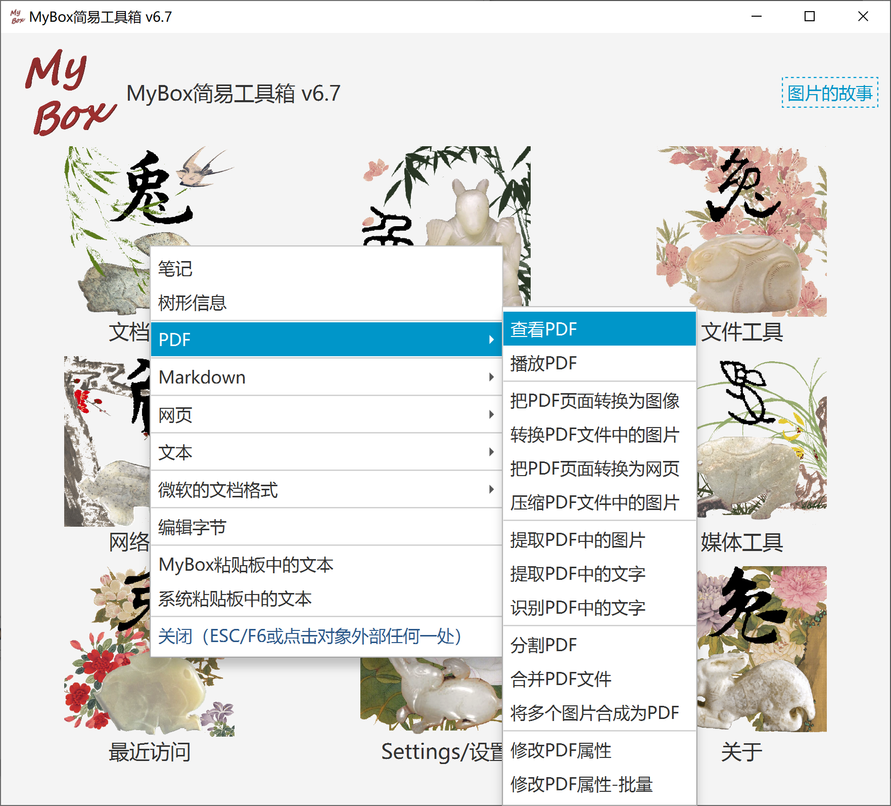
对任意节点可执行：增删改子节点、重命名、移动、复制、导出、显示树图、展开、折叠。
编辑节点：
节点名不应包含字符串“ > ”（“>”前后是空格）。
一个节点可以设置多个标签。
可选显示节点的序列号。
导出：
格式：文本（用于导入）、单个网页、网页框架、xml。
可选择是否导出时间、标签。
可选择文件字符集。
可设置网页风格。
导入。提供示例。
查询：
节点的子节点或所有后代。
按标签。可选多个标签。
按更改时间。 可选多个时间。
按标题或内容包含的字符串。 可输入多个关键字。
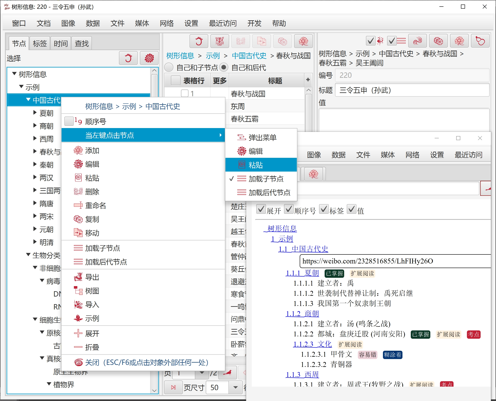
“网页代码”、“富文本”、“Markdown”、“文本”.
每个编辑模式都可以单独修改网页。
当前页签下的编辑模式为“当前编辑模式”。
点击按钮“同步”(F10)，把当前编辑模式中的修改应用到其它模式。
点击按钮“保存”(F2)，保存当前编辑模式的修改，并将修改自动同步到其它模式。
笔记的html代码应是"body"的内容，不要包含标签“html”、“head”、和"body"。
可对笔记设置风格，仅用于显示，不会保存在笔记的代码中。
笔记本是由笔记构成的树状信息。
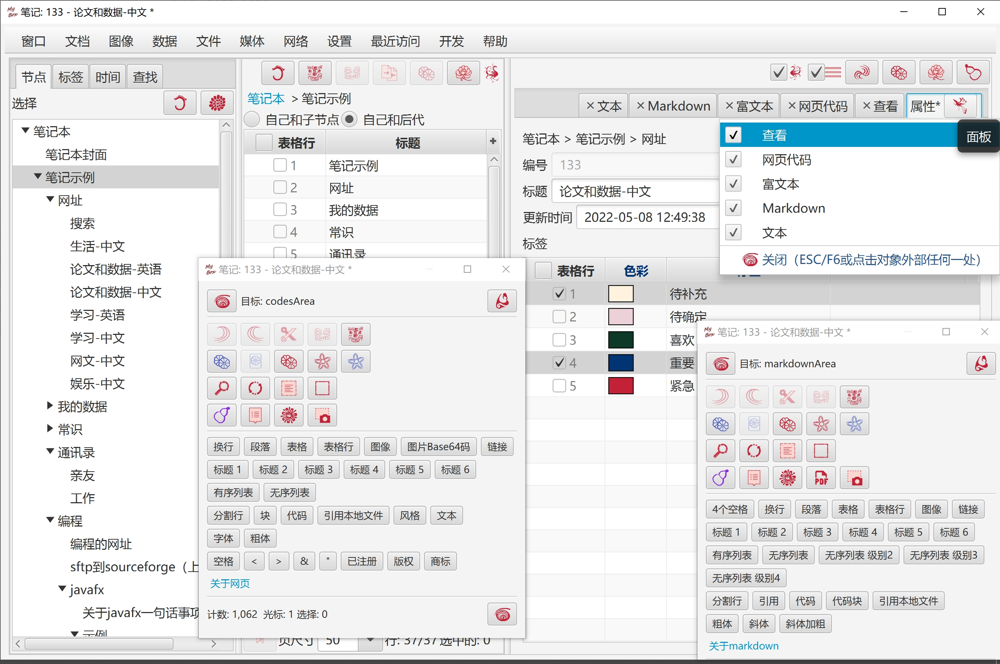
标签和缩略图
每页被转换为一张图片。可设置dpi以调整清晰度
提取页面上的文字
转换页面为一个网页
识别页面中的文字（OCR）
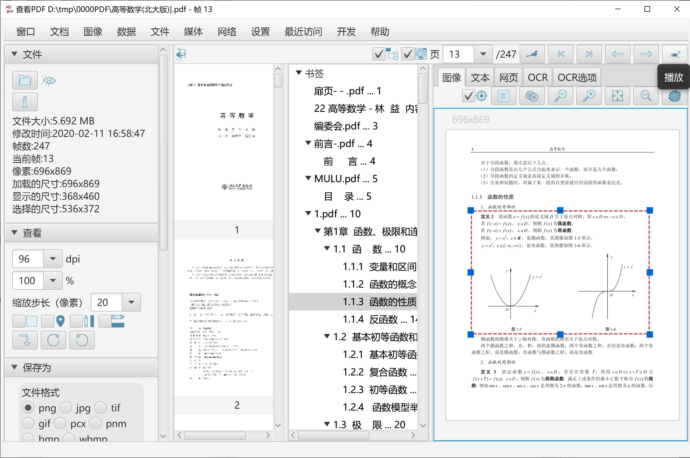
将PDF文件的每页转换并保存为一张图片文件，包含图像密度、色彩、格式、压缩、质量、色彩转换等选项。
转换PDF文件中被选择页的图片，并保存为新的PDF。
压缩PDF文件中的图片，保存为新的PDF。可设置JPEG质量或者黑白色阈值
将PDF转换为网页，可选：每页保存为一个html、还是整个PDF保存为一个html；字体文件/图像文件是嵌入、单独保存、还是忽略。
将PDF中的图片提取出来。
将PDF文件中的文字提取出来，可以定制页的分割行。
识别PDF文件中图片的文字（OCR）。
分割PDF文件为多个PDF文件，可按页数或者文件数来均分，也可以设置起止列表。
合并多个PDF文件。
将多个图片合成PDF文件
写PDF的选项：页面尺寸、图片属性、字体文件、页边、页眉、作者等。
修改PDF的属性，如：标题、作者、版本、修改时间、用户密码、所有者密码、用户权限等
查找与替换：
选项：忽略大小写、回绕。
查找字串和替换字串都支持支持多行。其中的换行符按照当前文件换行符的定义来处理。
支持正则表达式，提供示例。
计数
由于算法的限制，对于多页文档查找规则表达式时，假设：匹配的字符串的最大长度小于当前JVM可用内存的1/16。
定位：
选择指定行号的行。
选择指定位置的字符。
选择指定范围的行。
选择指定范围的字符。
行过滤：
条件：包含/不包含任一、包含/不含所有、包含/不包含规则表达式、匹配/不匹配规则表达式。
可累加过滤。
可保存过滤结果。
可选是否包含行号。
分页。可用于查看和编辑非常大的文件，如几十G的运行日志。
设置页尺寸。
页面导航。
先加载显示首页，同时后端扫描文件以统计字符数和行数；统计期间部分功能不可用；统计完毕自动刷新界面。
对于跨页字符串，确保查找、替换、过滤的正确性。
定时自动保存。只在有修改时保存。
保存时自动备份。可恢复到备份。
提供输入格式的按钮。
同步显示转换的网页和网页代码
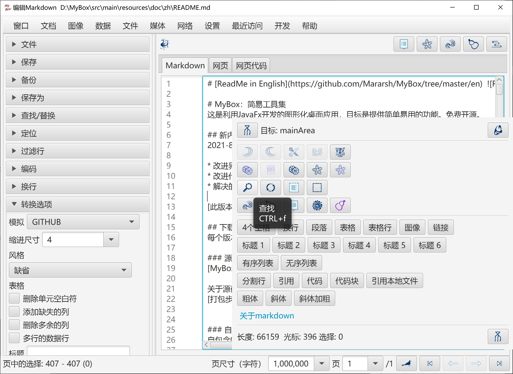
批量转换Markdown为网页。
批量转换Markdown为文本。
批量转换Markdown为PDF。
自动检测或手动设置文件编码；改变字符集实现转码；支持BOM设置。
自动检测换行符；改变换行符。显示行号。
支持LF（Unix/Linux）、
CR（Apple）、
CRLF（Windows）。
字符集对应的编码：字节的十六进制，同步显示、同步选择，可选同步滚动、同步更新。
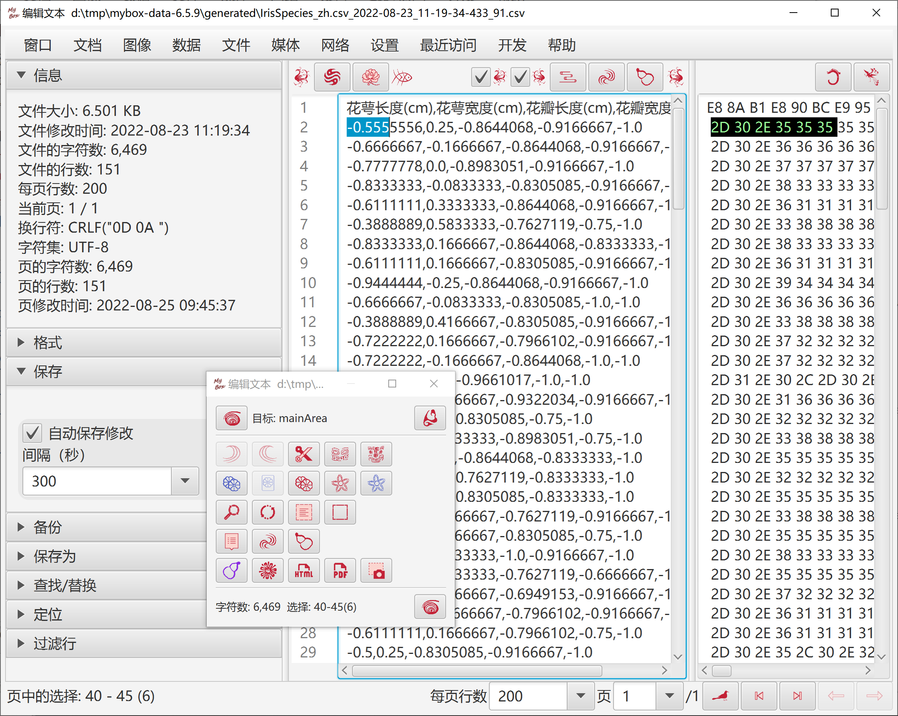
批量转换/分割文本文件。
合并文本文件。
批量转换文本文件为网页/PDF。
批量替换文本文件中的字符串。
加载网页的方式：打开文件、创建文件、或输入网址。
网页可以用四种模式来编辑，即“网页代码”、“富文本”、“Markdown”、“文本”：
每个编辑模式都可以单独修改网页。
当前页签下的编辑模式为“当前编辑模式”。
点击按钮“同步”(F10)，把当前编辑模式中的修改应用到其它模式。
点击按钮“保存”(F2)，保存当前编辑模式的修改，并将修改自动同步到其它模式。
点击按钮“弹出”(CTRL/ALT+p)以把当前编辑模式的内容显示在一个新窗口中。
点击按钮“菜单”(F12)或右键点击编辑区域，以弹出按钮菜单。
点击按钮“MyBox粘贴板”(CTRL/ALT+m)以弹出文本粘贴板来方便粘贴。
对于frameset可以选择frame来编辑。
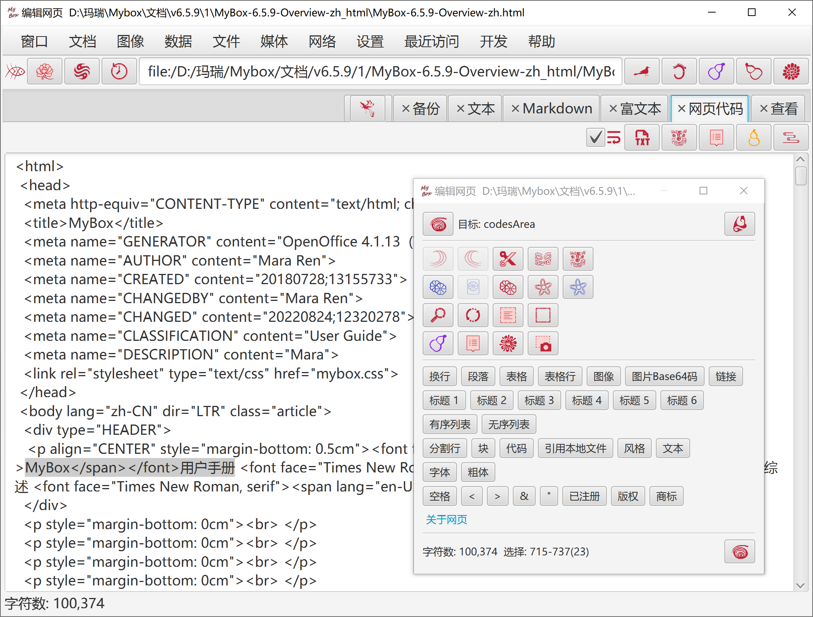
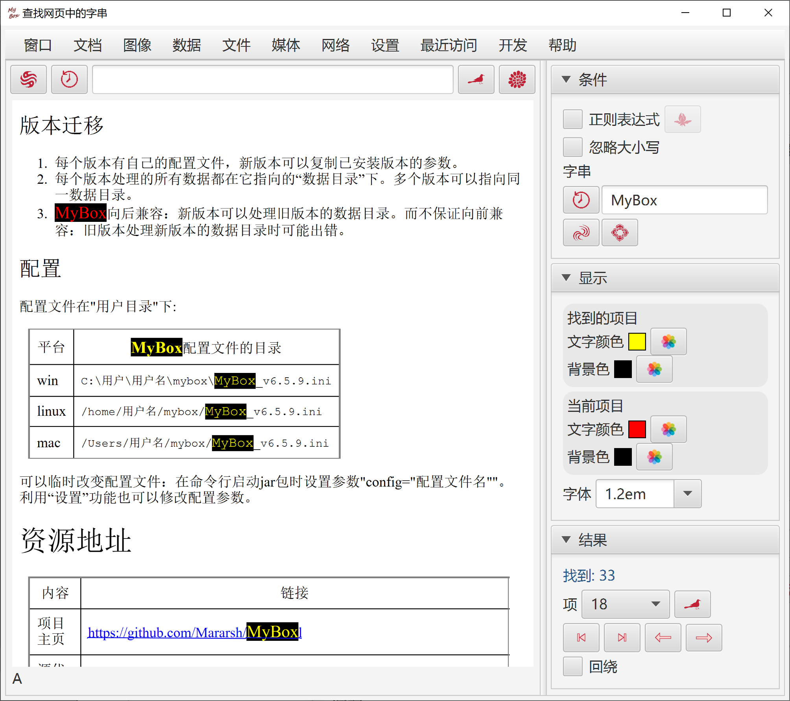
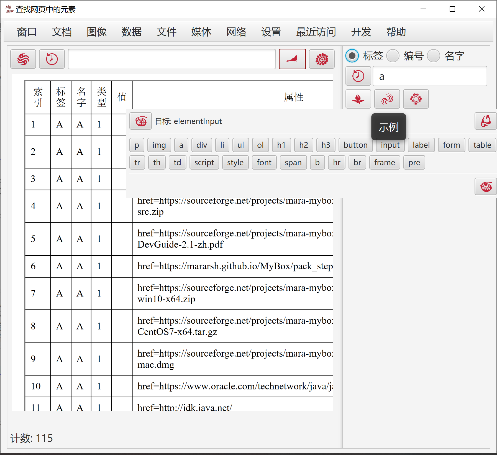
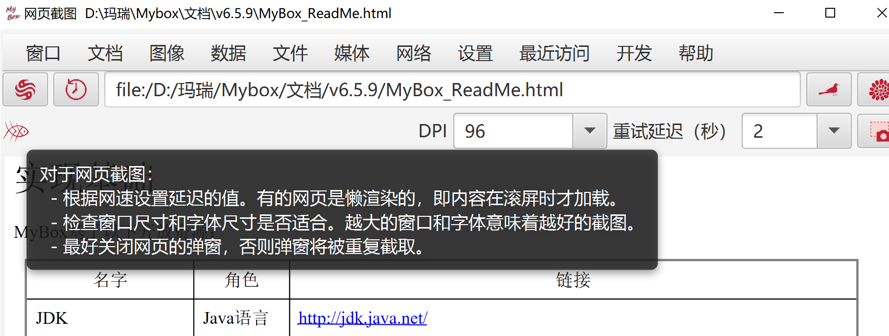
批量提取网页中的表格数据：
批量转换网页为Markdown/文本/PDF文件：
批量设置网页的编码/样式。
合并多个网页为一个网页/Markdown/文本/PDF文件。
对多个文件生成框架文件。
格式：
文件".ppt"(PPT 97，即OLE 2格式)。
文件".pptx"(PPT 2007, 即OOXML格式）。
不说明则同时支持这两种格式。
查看PPT文件-图像模式。逐页显示：
页面被转换为图片
幻灯片文本和备注文本
批量转换PPT文件为图片/PDF。
批量提取PPT文件中的对象：
可选择提取：幻灯片文本、备注文本、模板文本、注释文本、图片、声音、OLE(Word/Excel)
不支持从".pptx"中提取声音。
批量分割PPT文件。
合并".pptx"文件。
将多个图片合成为".ppt"文件。
播放PPT文件。
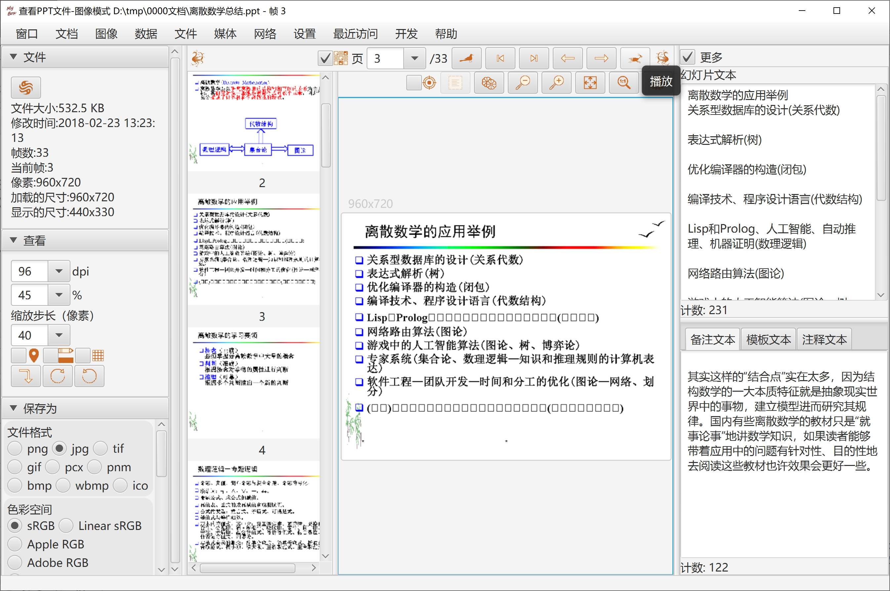
格式：
文件".doc"(Word 97，即OLE 2格式)被转换为html，保留大部分格式。
文件".docx"(Word 2007, 即OOXML格式)被转换为文本，格式丢失。
查看Word文件。
批量转换Word文件为html/PDF。
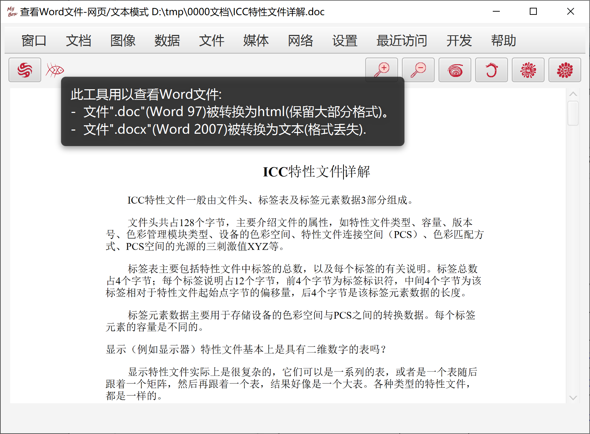
从Excel/Word/PowerPoint/Publisher/Visio中提取文本。
常用ASCII字符的输入选择框。
换行。仅用于显示、无实际影响。显示行号。可按字节数换行、或按一组字节值来换行。
选择字符集来解码：同步显示、同步滚动、同步选择。非字符显示为问号。
分页。若按字节数换行，则行过滤时不考虑跨页。
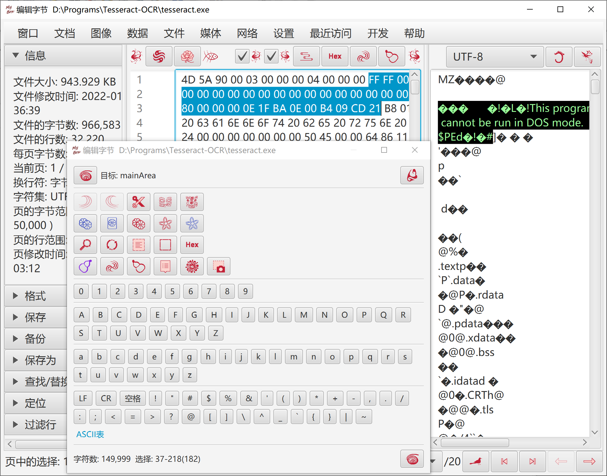
点击按钮后，开始监视系统粘贴板的新文本，将它们保存到MyBox粘贴板中。
可以设置监视间隔。
在监视界面上可以累加监视到文本。分隔符可选。
在以下条件之一发生时，此监视停止：
用户点击按钮“停止”
MyBox退出
未选择“复制到MyBox粘贴板”，并且此界面被关闭。
可选在MyBox启动时开始监视。
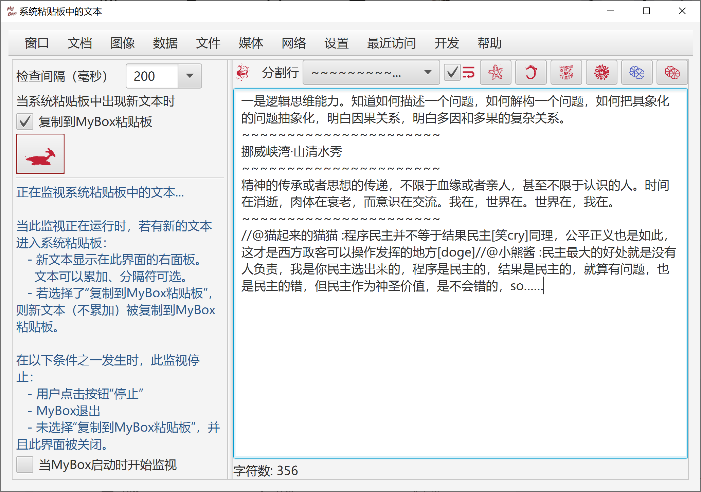
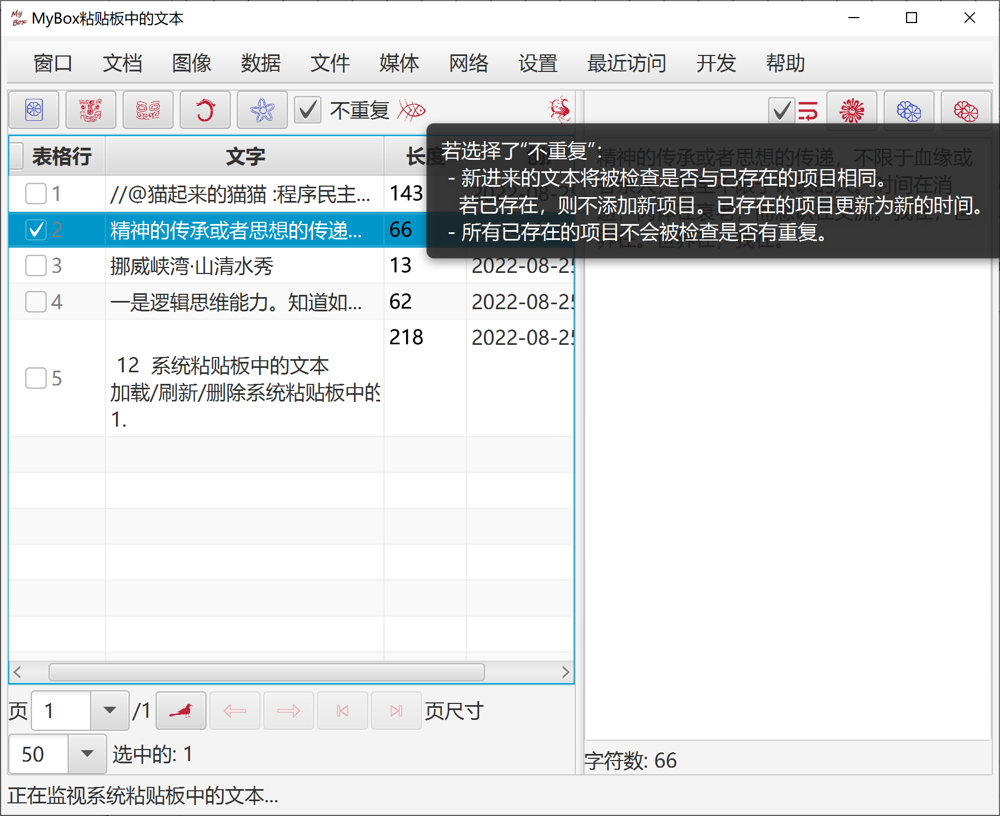
<文档结束>
第